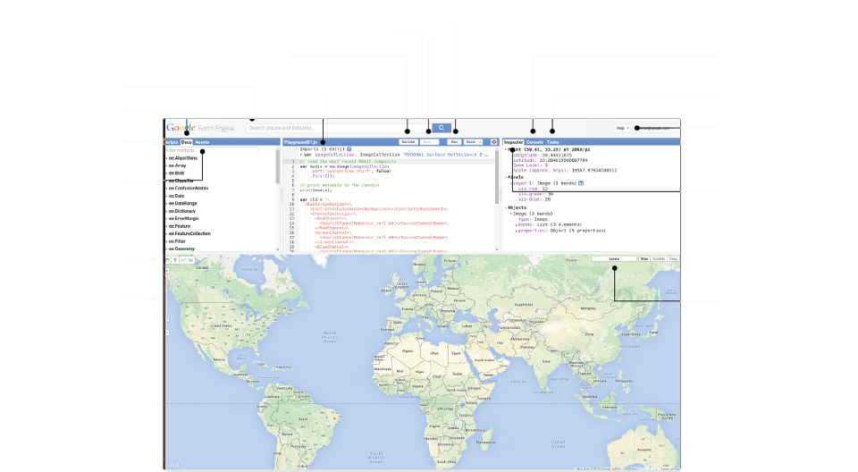

Assignment 8
Image analysis in Google Earth Engine
This assignment will use Google Earth Engine to create an app displaying elevation and slope images. Users will be able to swipe a divider back and forth to switch the visible layers, making it easy to compare elevation, slope, and a basemap.
https://geog4046.users.earthengine.app/view/highland-road-elevation-explorer
You must have a Google account and request access to Earth Engine.
Table of Contents
Code Editor
Go to the Google Earth Engine Code Editor. Familiarize yourself with the interface, especially the Code Editor panel in the center, the Map at the bottom, and the Inspector/Console/Tasks panel on the right. The Script panel to the top left is where you can create new files and folders and see a list of your saved scripts.

Labeled interface of the Earth Engine Code Editor. Source: Earth Engine documentation.
Data
We will use the USGS National Elevation Dataset hosted by Google in the Earth Engine Data Catalog. It is a digital elevation model (DEM) image. Each pixel is 1/3 arc-second, or about 10x10 meters, with pixel values in meters above sea level.
The slope layer that we will display is not a separate dataset; it will be calculated on the fly by Earth Engine with ee.Terrain.slope(). In the finished app, the DEM and slope layers will also be combined into one image temporarily so the app can quickly return both values when the user clicks the map.
Steps
The steps below build an app in three iterations. Start with a basic working version, then improve the interface, and then adapt it for a new place. The code works for a Baton Rouge map but can be adapted for any area. Take a look at the finished app to see what we’re working towards.
Click Save to put a copy of your script into a repository, seen in the top left panel of the code editor. Save your work often while going through these steps.
Iteration 1: Build a working map
In the first iteration, make a working map displaying an elevation layer.
- Start by defining and previewing the DEM (elevation) layer.
var dem = ee.Image("USGS/NED"); // define data layer: digital elevation model depicting elevation in meters Map.addLayer(dem, {}, 'Elevation'); // temporary line to display the layer on the map with a labelClick
Runto execute the code. The national DEM is shown with the default black and white color ramp. - Modify the code by adding a style variable before the DEM is added to the map.
var dem = ee.Image("USGS/NED"); // define data layer: digital elevation model depicting elevation in meters var demStyle = {min: 3, max: 20, palette: ['green', 'yellow', 'orange']}; // elevations between 3-20 meters will have a color gradient Map.addLayer(dem, demStyle, 'Elevation'); // temporary line to display the layer on the map with a labelRunand see how the visualization changes. - Add a new line at the end to center and zoom the map to Highland Road, Baton Rouge.
Map.setCenter(-91.167275, 30.398996, 17);Iteration 2: Add another layer
Now we will add another layer, slope, to the map. The slope is not an existing dataset in the Earth Engine Catalog; it is calculated on the fly based on the DEM.
- Modify the code to create a slope layer, define a style, and add it to the map.
//Define data layers var dem = ee.Image("USGS/NED"); // digital elevation model depicting elevation in meters var slope = ee.Terrain.slope(dem); // slope calculated from DEM layer // Define styles var demStyle = {min: 3, max: 20, palette: ['green', 'yellow', 'orange']}; // elevations between 3-20 meters will have a color gradient var slopeStyle = {min: 0, max: 30}; // default black and white gradient between slopes of 0-30 degrees // Add the layers to the map Map.addLayer(dem, demStyle, 'Elevation'); // temporary line to test display Map.addLayer(slope, slopeStyle, 'Slope'); // temporary line to test display Map.setCenter(-91.167275, 30.398996, 17); // temporary line to center mapRunto see the slope layer added over the DEM. The layer list tool on the map can be used to show and hide layers.
Iteration 3: Add the swipe feature
Now that we have a basic working version of the app, improve the interface so users can better visualize with both layers.
- Remove the temporary lines from the last iteration that added the DEM and slope layers on top of each other in the same map. Now we will display them in separate maps that can be swiped. After removing the temporary lines, append this code:
// Add swipe functionality var leftMap = ui.Map(); // create a map that will be on the left side of the swipe var rightMap = ui.Map(); // now the right leftMap.addLayer(dem, demStyle, 'Elevation'); // add the elevation layer to the left map rightMap.addLayer(slope, slopeStyle, 'Slope'); // slope to the right ui.Map.Linker([leftMap, rightMap]); // make the maps pan and zoom in sync var swipeMap = ui.SplitPanel(leftMap, rightMap, 'horizontal', true); // create the swipe functionality ui.root.clear(); // clear the default UI elements, including the original no-swipe map ui.root.add(swipeMap); // temporary line to display the swipe map in the UI leftMap.setCenter(-91.167275, 30.398996, 17);Runto see the two layers side by side and the new swipe tool. Note:setCentermight not consistently work. We will fix that later.
Iteration 4: Add an info panel
In this iteration, we will build out the UI more with a side panel to display info about the app.
- Remove the temporary line that added the swipe map. We will create a sidepanel and replace that line with a new call to
ui.root.add()that will add the swipe map and the side panel.// Create a side panel with text var title = ui.Label({value: 'Highland Road Elevation Explorer'}); // define text at top of side panel var info = ui.Label('Explore elevation changes along Highland Road on the floodplain of the Mississippi River. Slide the handle left and right to visually compare elevation and slope. Slide far right for elevation map controls.'); var sidePanel = ui.Panel([title,info], '', {width: '20%'}); // define the side panel (takes up 20% of page width) and add labels for title, info, and results // Display the swipeable maps and side panel in the app UI ui.root.clear(); ui.root.add(ui.Panel([swipeMap, sidePanel], ui.Panel.Layout.flow('horizontal'), {stretch: 'both'})); leftMap.setCenter(-91.167275, 30.398996, 17);
Iteration 5: Add a query tool
Now we will add a feature that lets users click the map and see the elevation and slope values printed in the side panel.
- Append this to your script:
// Allow users to click the map to query for elevation and slope var combined = dem.addBands(slope); // combine DEM and slope into a single raster for performance var resolution = 10; // pixel size in meters var getPixelValues = function(coords) { // define a function that takes a pixel's lat/lon as input and outputs slope and elevation of that pixel. var point = ee.Geometry.Point(coords.lon, coords.lat); // create a point object from the clicked lat/lon combined.sample(point, resolution).first().toDictionary().evaluate(function(val) { // query the server for the pixel values results.setValue('Elevation: ' + val.elevation + ' m\n' + 'Slope: ' + val.slope + '°'); // update the UI label }); }; leftMap.onClick(getPixelValues); // define a click listener; call getPixelValues on map click rightMap.onClick(getPixelValues);
Iteration 6: Wishlist features; bug fix
In the final iteration, we will put the finishing touches on the app, adding wishlist features that are not required but are nice to have. Fix any remaining bugs (the inconsistent center/zoom).
- Adding these lines will change the user’s mouse pointer into a crosshair, for querying pixels with laser precision!
leftMap.style().set('cursor', 'crosshair'); // style the mouse pointer as a crosshair rightMap.style().set('cursor', 'crosshair'); - Go back to the line that creates the title in the side panel. Define the
fontSizeto make the title text larger.var title = ui.Label({value: 'Highland Road Elevation Explorer', style: {fontSize: '2em'}}); // define text at top of side panel - Now look for the line in the
getPixelValuesfunction that prints the query results in the side panel. We will use thetoFixed()method to limit the number of decimal places printed for the elevation and slope values.
For example, instead of printing elevation with val.elevation, we can append the toFixed() method with a parameter specifying the number of decimal places to round to: val.elevation.toFixed(1).
var getPixelValues = function(coords) { // define a function that takes a pixel's lat/lon as input
var point = ee.Geometry.Point(coords.lon, coords.lat); // create a point object
combined.sample(point, resolution).first().toDictionary().evaluate(function(val) {
results.setValue('Elevation: ' + val.elevation.toFixed(1) + ' m\n' + 'Slope: ' + val.slope.toFixed(1) + '°');
});
};
- Lastly we should deal with the inconsistent behavior of the
setCenter()method. Sometimes it zooms correctly when the app is loaded, other times it does not. This is likely caused by a layer not fully loading by the time the method is called, so the map does not center/zoom. This bandaid fix simply waits 3 seconds before trying to zoom.// Wait 3 seconds for everything to load, then center map ui.util.setTimeout(function() { leftMap.setCenter(-91.167275, 30.398996, 17);}, 3000); - At this point, your full code should look like this:
// Define data layers var dem = ee.Image("USGS/NED"); // digital elevation model depicting elevation in meters var slope = ee.Terrain.slope(dem); // slope calculated from DEM layer // Define layer symbology var demStyle = {min: 3, max: 20, palette: ['green', 'yellow', 'orange']}; // elevations between 3-20 meters will have a color gradient var slopeStyle = {min: 0, max: 30}; // default black and white gradient between slopes of 0-30 degrees // Add swipe functionality var leftMap = ui.Map(); // create a map that will be on the left side of the swipe var rightMap = ui.Map(); // now the right leftMap.setCenter(-91.167275, 30.398996, 17); leftMap.addLayer(dem, demStyle, 'Elevation'); // add the elevation layer to the left map rightMap.addLayer(slope, slopeStyle, 'Slope'); // slope to the right ui.Map.Linker([leftMap, rightMap]); // make the maps pan and zoom in sync var swipeMap = ui.SplitPanel(leftMap, rightMap, 'horizontal', true); // create the swipe functionality // Create a side panel with text var title = ui.Label({value: 'Highland Road Elevation Explorer', style: {fontSize: '2em'}}); // define text at top of side panel var info = ui.Label('Explore elevation changes along Highland Road on the floodplain of the Mississippi River. Slide the handle left and right to visually compare elevation and slope. Slide far right for elevation map controls.'); var results = ui.Label('Click the map for elevation and slope at that point.', {whiteSpace: 'pre-wrap'}); var sidePanel = ui.Panel([title,info,results], '', {width: '20%'}); // define the side panel (takes up 20% of page width) and add labels for title, info, and results // Display the swipeable maps and side panel in the app UI ui.root.clear(); ui.root.add(ui.Panel([swipeMap, sidePanel], ui.Panel.Layout.flow('horizontal'), {stretch: 'both'})); // Allow users to click the map to query for elevation and slope var combined = dem.addBands(slope); // combine DEM and slope into a single raster for performance var resolution = 10; // pixel size in meters var getPixelValues = function(coords) { // define a function that takes a pixel's lat/lon as input var point = ee.Geometry.Point(coords.lon, coords.lat); // create a point object combined.sample(point, resolution).first().toDictionary().evaluate(function(val) { results.setValue('Elevation: ' + val.elevation.toFixed(1) + ' m\n' + 'Slope: ' + val.slope.toFixed(1) + '°'); }); }; // Define a click listener; call getPixelValues on map click leftMap.onClick(getPixelValues); rightMap.onClick(getPixelValues); // Style the mouse pointer as a crosshair leftMap.style().set('cursor', 'crosshair'); rightMap.style().set('cursor', 'crosshair'); // Wait 3 seconds for everything to load, then center map ui.util.setTimeout(function() { leftMap.setCenter(-91.167275, 30.398996, 17);}, 3000);
Try It
- Choose a new area of interest that is not in East Baton Rouge Parish:
a. Change map center and zoom.
b. Change the min/max elevation and slope, appropriate for the new location. - Modify the DEM color palette:
a. Change at least one of the existing colors.
b. Add at least one color. - Update the title and descriptive text in the side panel so they match the new location.
- Test your app by clicking multiple places on the map and confirming that elevation and slope values appear correctly.
- Take a screenshot of your map and side panel.
- Turn your map into an app.
a. ClickApps>New App.
b. Give it anApp Name.
c. Create a new Google Cloud Project or select an existing project.
d. CheckFeature this app in your Public Apps Gallery.
e. Add your screenshot.
f. Provide a briefDescription.
g.Publish.
Checklist
- A publicly accessible app on earthengine.app.
- App shows elevation and slope layers.
- Map center not in Baton Rouge.
- Appropriate zoom level for app’s purpose (Highland Road close; Grand Canyon far).
- Color palette different from green-yellow-orange example, at least four colors.
- Swipe tool to compare elevation and slope on synced maps.
- Side panel with at least title, description, and live pixel values appropriate for your app.
- Clicking the map displays elevation and slope values correctly.
- Pixel values are rounded to one decimal place.
- Crosshair cursor enabled on the maps.
Submit
- Example:
https://yourname.users.earthengine.app/view/your-app
↑ Top
← Back to Assignments